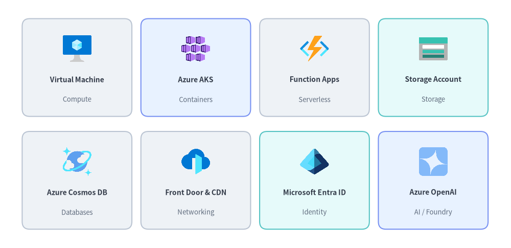
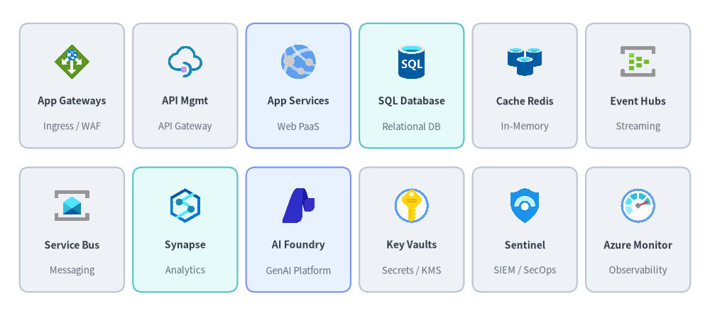
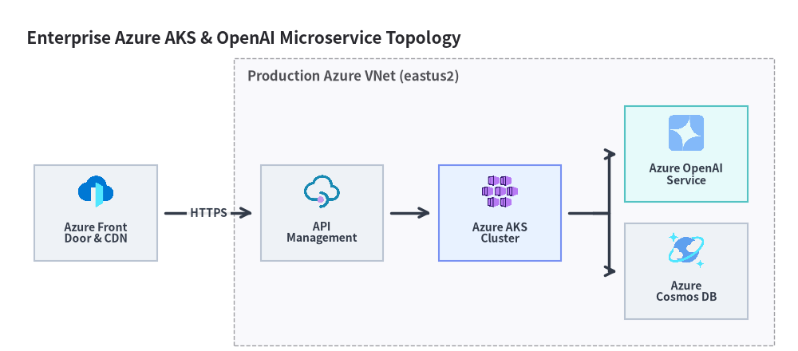

Microsoft Azure Icons
Drawlib provides 250 high-resolution (512×512) Microsoft Azure architecture service icons via drawlib.icons.azure and the AzureIcon Enum. See also Icons Overview, Google Cloud (GCP) Icons, AWS Icons, and Cloud & Original Cloud Icons.

Source Code
from drawlib.canvas import save, setup
from drawlib.icons import azure
from drawlib.shapes import rectangle
from drawlib.styles import Styles
from drawlib.text import text
setup(width=136, height=66)
row1 = [
("Virtual Machine", "Compute", azure.virtual_machine, Styles.Neutral),
("Azure AKS", "Containers", azure.kubernetes_services, Styles.PrimaryNeutral),
("Function Apps", "Serverless", azure.function_apps, Styles.Neutral),
("Storage Account", "Storage", azure.storage_accounts, Styles.SecondaryNeutral),
]
row2 = [
("Azure Cosmos DB", "Databases", azure.cosmos_db, Styles.Neutral),
("Front Door & CDN", "Networking", azure.front_door_and_cdn_profiles, Styles.Neutral),
("Microsoft Entra ID", "Identity", azure.entra_id, Styles.SecondaryNeutral),
("Azure OpenAI", "AI / Foundry", azure.openai, Styles.PrimaryNeutral),
]
for row_idx, items in enumerate([row1, row2]):
cy = 48.0 if row_idx == 0 else 18.0
for col_idx, (title, cat, icon_fn, card_st) in enumerate(items):
cx = 20.5 + col_idx * 31.6
rectangle((cx, cy), width=29.2, height=26.0, style=card_st.patch(shape_r=2))
icon_fn((cx, cy + 5.0), width=8.5, style=Styles.Primary)
text((cx, cy - 3.2), title, style=Styles.DarkBold.patch(text_size=10.0))
text((cx, cy - 8.5), cat, style=Styles.Muted.patch(text_size=9.5))
save()
1. API Signature & AzureIcon Enum Usage
Every Azure icon function in drawlib.icons.azure shares a center-anchored (cx, cy) call signature, while ArchitectureDiagram and SequenceDiagram accept the strongly typed AzureIcon Enum:
from drawlib.diagrams.architecture import ArchitectureDiagram, AzureIcon, Node
from drawlib.icons import azure
from drawlib.styles import Styles
# 1. Direct canvas icon rendering at center (cx, cy) with 1:1 square aspect ratio
azure.kubernetes_services((40, 25), width=10.0, style=Styles.Primary, variant="default")
# 2. High-level ArchitectureDiagram node using AzureIcon Enum
d = ArchitectureDiagram()
aks_node = d.add(
Node("AKS Cluster", width=25, height=18, icon=AzureIcon.KUBERNETES_SERVICES, icon_size=7.5),
xy=(10.0, 10.0),
)
Parameter / Style Attribute |
Type | Default | Description |
|---|---|---|---|
xy |
tuple[float, float] |
Required | Center coordinate (cx, cy) of the icon (halign="center", valign="center"). |
width |
float |
Required | Horizontal width in canvas units; height scales automatically (1:1). |
style |
Style |
Required | Controls alpha (0.0–1.0 opacity), angle (rotation), image_tint_color, and image_border_*. |
variant |
Literal["default"] |
"default" |
Visual variant ("default" official Microsoft Azure architecture palette). |
AzureIcon.<NAME> |
AzureIcon |
— | Upper-case StrEnum member matching azure.<name> (e.g., AzureIcon.COSMOS_DB -> azure.cosmos_db). |
2. Core Azure Services Showcase (250 Canonical Icons)
The following 12-card (2×6) catalog highlights foundational Microsoft Azure web, networking, data, AI Foundry, and security services:

Source Code
from drawlib.canvas import save, setup
from drawlib.icons import azure
from drawlib.shapes import rectangle
from drawlib.styles import Styles
from drawlib.text import text
setup(width=148, height=66)
row1 = [
("App Gateways", "Ingress / WAF", azure.application_gateways, Styles.Neutral),
("API Mgmt", "API Gateway", azure.api_management_services, Styles.Neutral),
("App Services", "Web PaaS", azure.app_services, Styles.PrimaryNeutral),
("SQL Database", "Relational DB", azure.sql_database, Styles.SecondaryNeutral),
("Cache Redis", "In-Memory", azure.cache_redis, Styles.Neutral),
("Event Hubs", "Streaming", azure.event_hubs, Styles.Neutral),
]
row2 = [
("Service Bus", "Messaging", azure.service_bus, Styles.Neutral),
("Synapse", "Analytics", azure.synapse_analytics, Styles.SecondaryNeutral),
("AI Foundry", "GenAI Platform", azure.ai_foundry, Styles.PrimaryNeutral),
("Key Vaults", "Secrets / KMS", azure.key_vaults, Styles.Neutral),
("Sentinel", "SIEM / SecOps", azure.sentinel, Styles.Neutral),
("Azure Monitor", "Observability", azure.monitor, Styles.Neutral),
]
for row_idx, items in enumerate([row1, row2]):
cy = 48.0 if row_idx == 0 else 18.0
for col_idx, (title, sub, icon_fn, card_st) in enumerate(items):
cx = 15.0 + col_idx * 23.6
rectangle((cx, cy), width=21.8, height=26.0, style=card_st.patch(shape_r=2))
icon_fn((cx, cy + 5.0), width=8.0, style=Styles.Primary)
text((cx, cy - 3.2), title, style=Styles.DarkBold.patch(text_size=10.0))
text((cx, cy - 8.5), sub, style=Styles.Muted.patch(text_size=9.5))
save()
2.1. Complete Categorized Reference of All 250 Azure Icons
All 250 canonical functions in drawlib.icons.azure follow a strict 1-to-1 naming rule (with matching uppercase members on AzureIcon):
| Category | Count | Canonical drawlib.icons.azure.<name> Functions (AzureIcon.<NAME>) |
|---|---|---|
| Compute & Hybrid | 27 | arc, arc_kubernetes, arc_machines, auto_scale, availability_sets, batch_accounts, cloud_shell, compute_fleet, compute_galleries, disks, disks_snapshots, images, linux, local, managed_service_fabric, migrate, operator_5g_core, operator_nexus, red_hat_openshift, service_fabric_clusters, sphere, spring_apps, stack_hci_premium, virtual_desktop, virtual_machine, vm_scale_sets, vmware_solution |
| Containers & Serverless | 13 | aks_automatic, app_service_environments, app_services, application_gateway_containers, container_apps_environments, container_instances, container_registries, container_storage, function_apps, kubernetes_services, logic_apps, static_apps, worker_container_app |
| Storage & Backup | 18 | backup_center, backup_vault, data_box, data_shares, data_sharing, data_transfer, databox_gateway, edge_storage_accelerator, fileshares, managed_file_shares, netapp_files, recovery_services_vaults, storage_accounts, storage_azure_files, storage_container, storage_mover, storage_queue, storage_sync_services |
| Databases & Caching | 18 | cache_redis, cosmos_db, database_mariadb_server, database_migration_services, database_mysql_server, database_postgresql_server, documentdb, managed_database, managed_redis, oracle_database, sql, sql_data_warehouses, sql_database, sql_edge, sql_elastic_pools, sql_managed_instance, sql_server, sql_vm |
| Networking & CDN | 34 | access_point, application_gateways, bastions, cdn_profiles, communications_gateway, ddos_custom_policy, ddos_protection_plans, dns_private_resolver, dns_zones, expressroute_circuits, firewall_manager, firewall_policy, firewalls, front_door_and_cdn_profiles, hybrid_connectivity_hub, ip_address_manager, load_balancers, nat, network_security_groups, network_watcher, on_premises_data_gateways, private_link, private_link_service, public_ip_addresses, relays, route_tables, subnet, traffic_manager_profiles, virtual_network_gateways, virtual_networks, virtual_router, virtual_wan_hub, virtual_wans, web_application_firewall_policies_waf |
| Identity, Security & Governance | 38 | ad_b2c, app_registrations, application_security_groups, azureattestation, blueprints, compliance, conditional_access, defender_easm, defender_for_cloud, defender_for_iot, enterprise_applications, entra_connect, entra_connect_health, entra_connect_sync, entra_domain_services, entra_global_secure_access, entra_id, entra_id_protection, entra_internet_access, entra_managed_identities, entra_private_access, entra_privleged_identity_management, entra_verified_id, external_id, external_identities, identity_governance, information_protection, key_vaults, managed_identities, multi_factor_authentication, multi_tenancy, multifactor_authentication, policy, security, sentinel, token_service, users, verifiable_credentials |
| Analytics, Data & Messaging | 26 | analysis_services, api_center, api_for_fhir, api_management_services, api_proxy, communication_services, data_catalog, data_explorer_clusters, data_factories, data_lake_analytics, databricks, event_grid_domains, event_grid_topics, event_hub_clusters, event_hubs, hd_insight_clusters, notification_hub_namespaces, notification_hubs, power_bi_embedded, power_platform, pubsub, sendgrid_accounts, service_bus, signalr, stream_analytics_jobs, synapse_analytics |
| AI, ML & Cognitive Services | 32 | agentic_web_apps, ai_at_edge, ai_foundry, ai_foundry_iq, ai_gateway, ai_studio, anomaly_detector, applied_ai_services, batch_ai, bonsai, bot_services, cognitive_search, cognitive_services, computer_vision, content_moderators, content_safety, custom_vision, face_apis, form_recognizers, foundry_agent_service, foundry_models, genomics, immersive_readers, language, language_understanding, machine_learning, metrics_advisor, openai, personalizers, qna_makers, speech_services, translator_text |
| DevOps, Monitoring, IoT & Management | 44 | activity_log, advisor, alerts, app_configuration, app_testing, application_insights, automation_accounts, blockchain_applications, blockchain_service, chaos_studio, cost_management_and_billing, deployment_environments, device_provisioning_services, devops, devops_starter, devtest_labs, diagnostics_settings, digital_twins, endpoint_analytics, industrial_iot, iot_central_applications, iot_edge, iot_hub, iot_operations, lab_services, landing_zone, lighthouse, load_testing, log_analytics_workspaces, managed_devops_pools, managed_grafana, maps_accounts, media_service, mesh_applications, metrics, monitor, monitor_pipeline, remote_rendering, resiliency, resource_graph_explorer, spatial_anchor_accounts, toolchain_orchestrator, workbooks, workload_orchestration |
3. Azure Cloud Architecture Example (ArchitectureDiagram & AzureIcon)
Use ArchitectureDiagram with AzureIcon to build connected Azure Virtual Network (VNet) topologies with automatic card layout and orthogonal routing:
from drawlib.canvas import save, setup
from drawlib.diagrams.architecture import ArchitectureDiagram, AzureIcon, Node, NodeGroup
from drawlib.styles import Styles
setup(width=150, height=66)
d = ArchitectureDiagram(
node_style=Styles.Primary,
node_text_style=Styles.DarkBold.patch(text_size=10.0),
edge_style=Styles.DarkBold,
edge_text_style=Styles.DarkBold.patch(text_size=10.0),
node_card_style=Styles.Neutral,
title="Enterprise Azure AKS & OpenAI Microservice Topology",
)
fd = d.add(
Node(
"Azure Front\nDoor & CDN",
width=23,
height=18,
icon=AzureIcon.FRONT_DOOR_AND_CDN_PROFILES,
icon_size=7.5,
),
xy=(14.0, 22.0),
)
vnet = d.add(NodeGroup(title="Production Azure VNet (eastus2)", padding=5.0), xy=(40.0, 4.0))
apim = vnet.add(
Node("API\nManagement", width=23, height=18, icon=AzureIcon.API_MANAGEMENT_SERVICES, icon_size=7.5),
xy=(16.5, 18.0),
)
aks = vnet.add(
Node(
"Azure AKS\nCluster",
width=23,
height=18,
icon=AzureIcon.KUBERNETES_SERVICES,
icon_size=7.5,
card_style=Styles.PrimaryNeutral,
),
xy=(50.0, 18.0),
)
aoai = vnet.add(
Node(
"Azure OpenAI\nService",
width=23,
height=18,
icon=AzureIcon.OPENAI,
icon_size=7.5,
card_style=Styles.SecondaryNeutral,
),
xy=(85.0, 29.0),
)
cosmos = vnet.add(
Node("Azure\nCosmos DB", width=23, height=18, icon=AzureIcon.COSMOS_DB, icon_size=7.5),
xy=(85.0, 7.0),
)
d.connect(fd, apim, label="HTTPS", padding=1.5)
d.connect(apim, aks, padding=1.5)
aks.fork([aoai, cosmos], at_x=107.5, padding=1.5)
d.draw(xy=(4.0, 4.0))
save()
